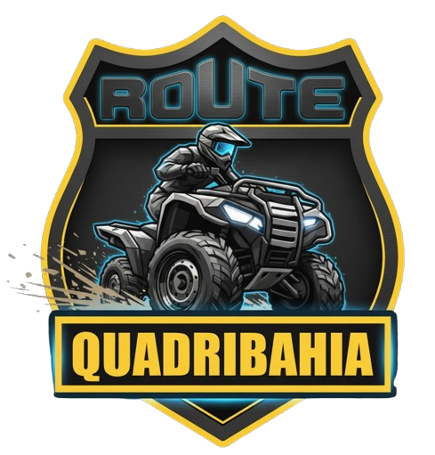
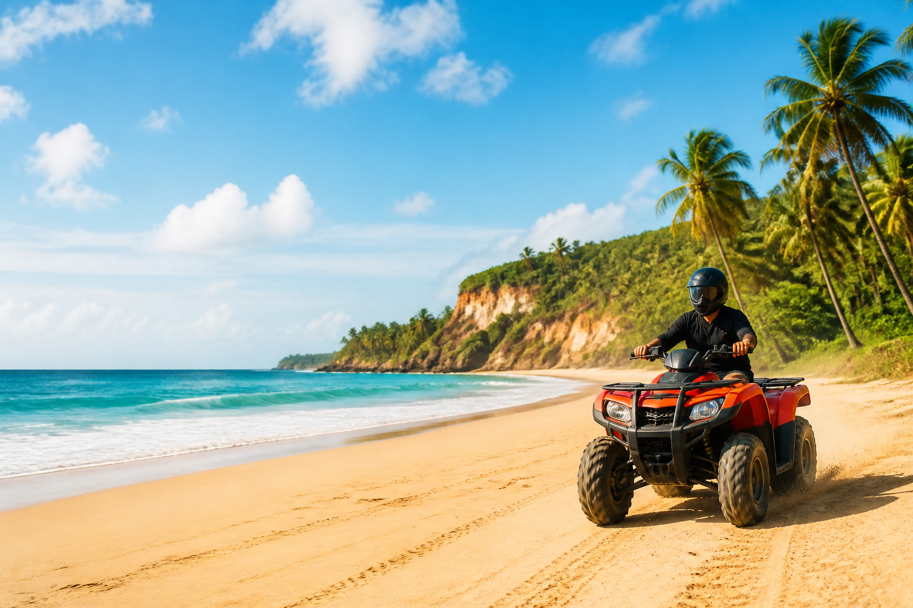
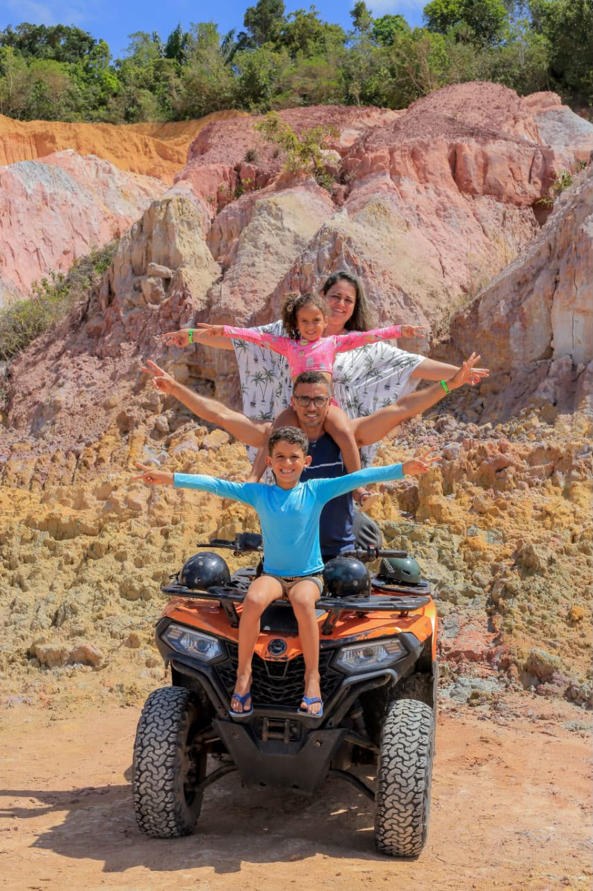
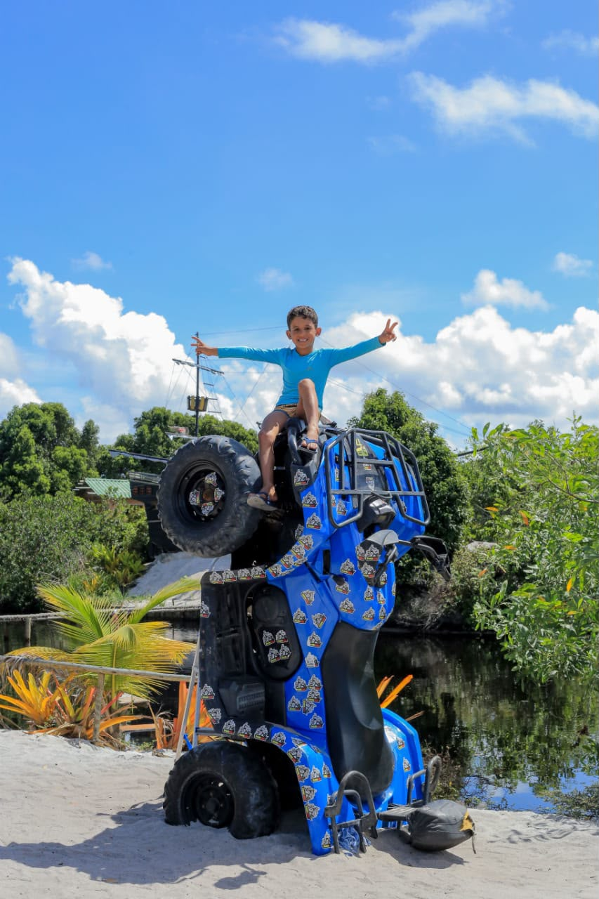
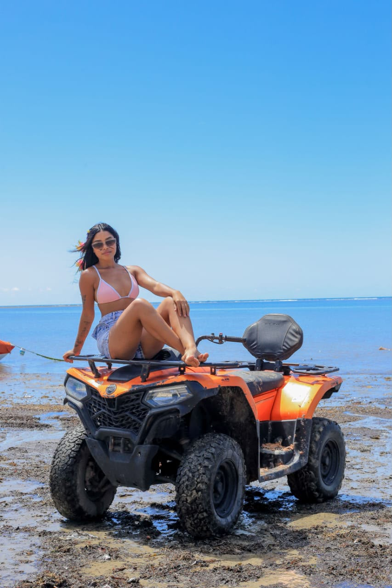
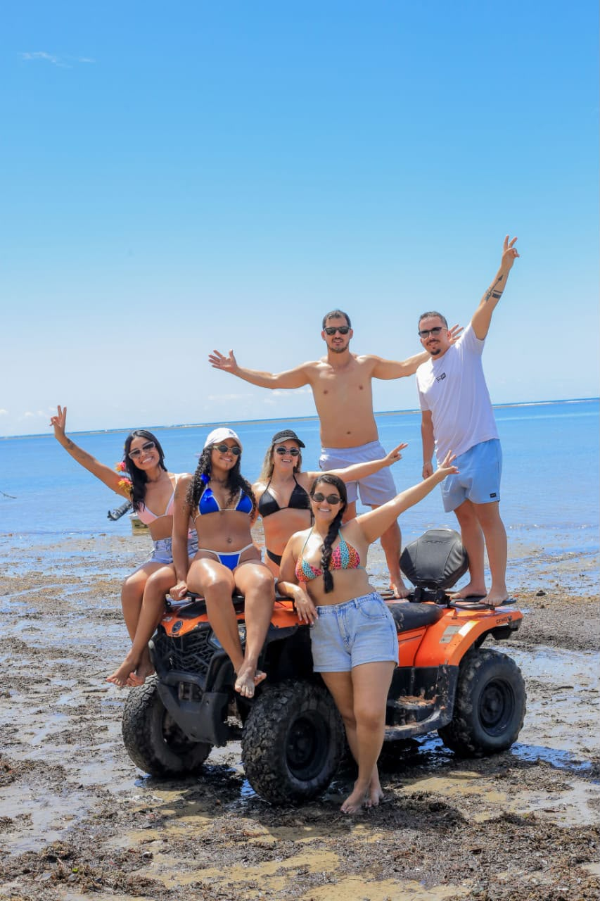
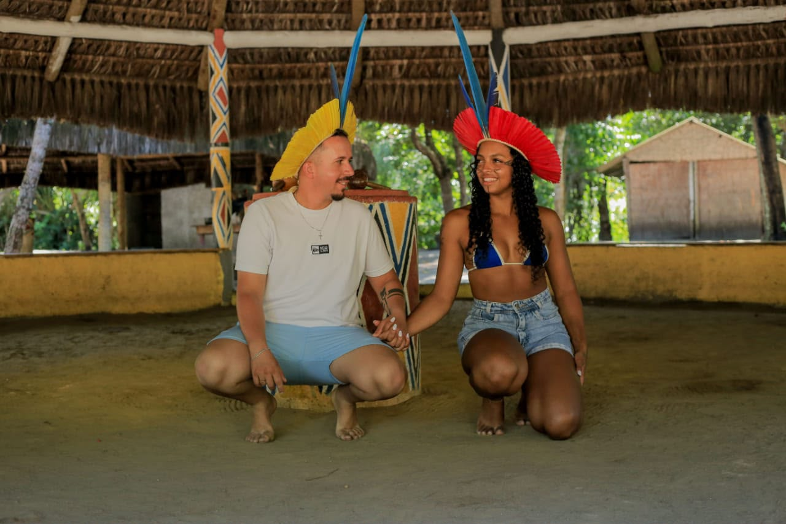
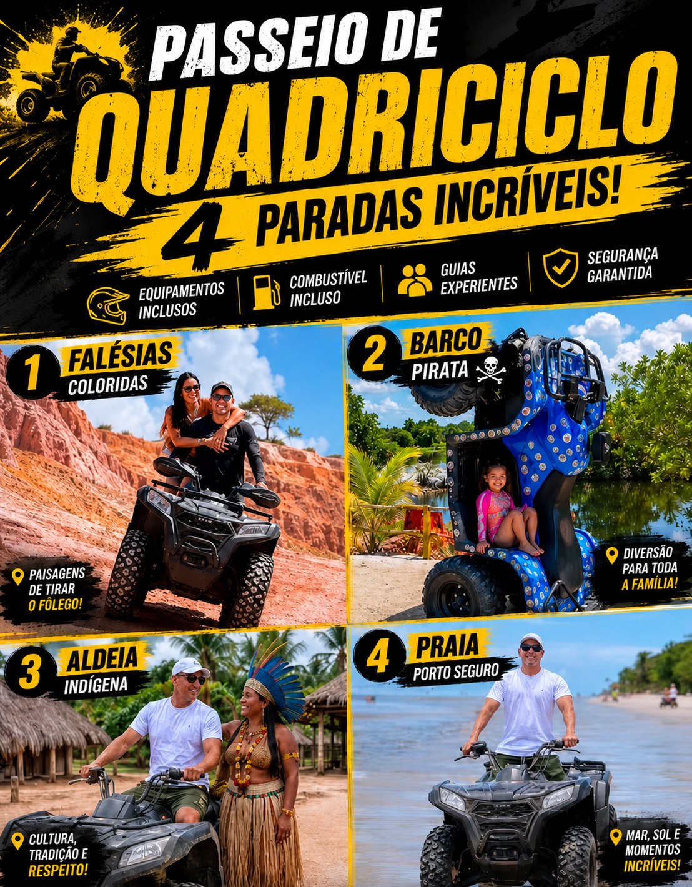

Falésias coloridas
Formações de argila colorida onde cada foto vira uma lembrança natural do passeio.

Quadribahia
Aventura em Porto Seguro
Rota Praia com trilhas dentro da aldeia indígena, falésias coloridas, Praia de Mutá e a nova parada no Barco Pirata para fotos.
Rota Praia
A Quadribahia oferece uma experiência única para explorar trilhas dentro da aldeia indígena, viver contato direto com a cultura local e registrar paisagens que só esse roteiro entrega de quadriciclo.
Formações de argila colorida onde cada foto vira uma lembrança natural do passeio.
Palestra sobre tradições e exposição de artesanato local durante a experiência.
Parada na Praia de Mutá, em Coroa Vermelha, e fotos na nova atração de Porto Seguro.
Horários
O passeio tem duração aproximada de 2h30. Aos domingos, consulte disponibilidade. A apresentação cultural na aldeia não é garantida aos domingos.
Fotos da Rota Praia






Antes de reservar
Informe quantidade de pessoas e a data desejada para a Rota Praia. A Quadribahia responde direto pelo WhatsApp.